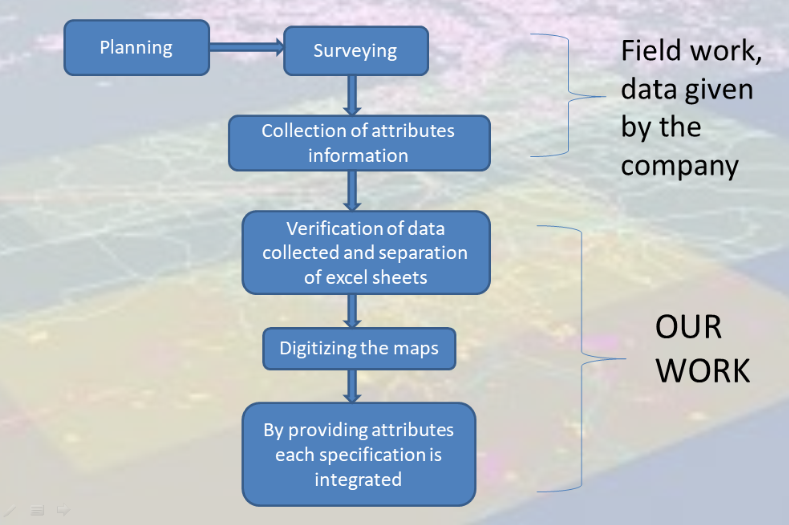

Sub Scheme on formulation of GIS
based master plan for AMRUT cities
- It is government based project.
- Atal Mission for Rejuvenation and Urban Transformation (AMRUT) was
launched by Prime Minister of India Narendra Modi in June 2015 with the focus to
establish infrastructure that could ensure adequate robust sewage networks and water
supply for urban transformation by implementing urban revival projects.
- The main aim of this mission is to develop underlying cities and also digitizing the cities newly
- It is also to create infrastructure to provide basic services to households and build amenities
- This will improve the quality of life of all especially the poor and the disadvantaged
- It has a country wide coverage of Five hundred (500) cities having a population greater than
one Lakh, cites situated on stems of main rivers , cities located in hilly areas, islands ,tourist
areas and a few capital cities.
- Nalgonda is one of those AMRUT cities
Technologies used: QGIS
Flow of work in preparing GIS based map:

- In this project for buildings we gave the following attributes
- Building id
- Construction type
- Locality name
- Number of floors
- In this project for roads we gave the following attributes
- Locality
- Road Id
- Type of road